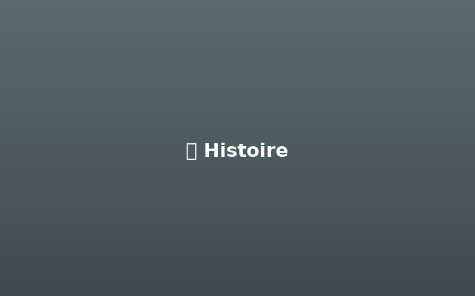
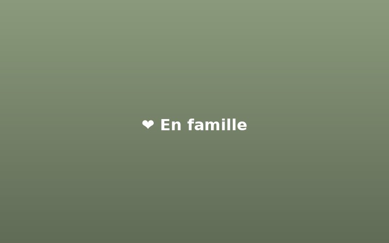
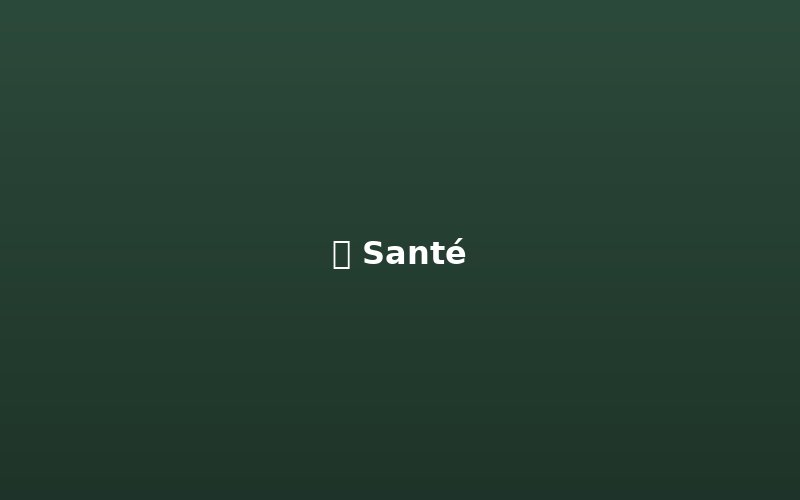

Un géant au cœur tendre
Le Léonberg est une race allemande créée au milieu du XIXe siècle par Heinrich Essig, un éleveur de la ville de Leonberg, dans le Bade-Wurtemberg. Son objectif était de créer un chien imposant ressemblant au lion figurant sur les armoiries de sa ville.
Pour élaborer cette race, il croisa probablement des Saint-Bernard, des Terre-Neuve et des Grandes Pyramides. Le résultat est un chien majestueux, puissant mais d'une douceur infinie.
Très rapidement, le Léonberg devint un chien de compagnie prisé par les cours royales d'Europe. Napoléon III, l'Impératrice Élisabeth d'Autriche (Sissi) et même le Prince de Galles en possédaient.

Poil long et dense, imperméable
Jusqu'à 10-11 ans avec de bons soins

Le Léonberg est réputé pour son caractère exceptionnel. Malgré sa taille imposante, c'est un chien doux, calme et extrêmement attaché à sa famille. Il est particulièrement patient avec les enfants, ce qui en fait un excellent chien de famille.
Intelligent et observateur, il sait s'adapter à différentes situations. Il n'est ni agressif ni craintif, mais possède une certaine réserve envers les étrangers, ce qui en fait un bon gardien dissuasif.
Brossage régulier (2-3 fois par semaine) nécessaire pour entretenir son pelage long. Une mue importante a lieu deux fois par an.
Besoin d'espace et d'exercice quotidien. Promenades régulières et accès à un jardin clôturé sont recommandés.
Éducation douce mais ferme dès le plus jeune âge. Répond très bien au renforcement positif.
Nécessite un extérieur spacieux. Peut vivre en appartement uniquement si exercice suffisant.
Supporte bien le froid grâce à son sous-poil épais. Attention à la chaleur : jamais seul en plein soleil.
Régime alimentaire adapté aux grandes races. Surveillance du poids pour préserver les articulations.
Comme toutes les grandes races, le Léonberg peut être sujet à certaines pathologies héréditaires. Un élevage responsable effectue des tests sur les reproducteurs pour minimiser ces risques.
Notre élevage s'engage à ne reproduire que des chiens testés et indemnes de ces affections, garantissant ainsi la meilleure santé possible à nos chiots.

Découvrez nos conditions d'adoption et nos engagements pour le bien-être de nos chiots.
Nos conditions d'adoption